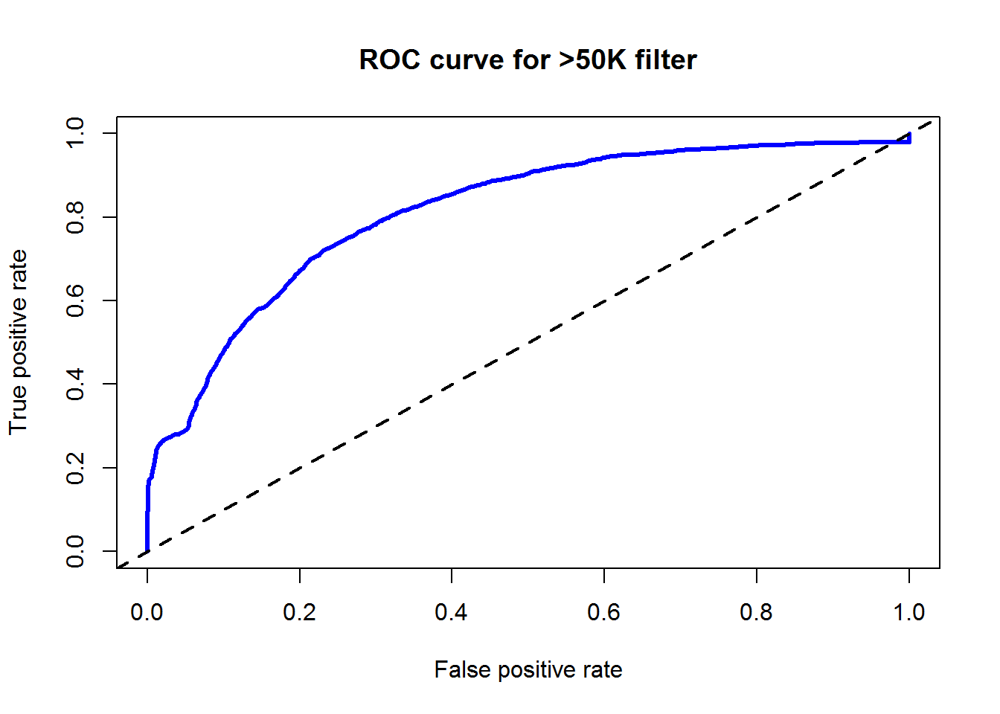

在这一章节，让我们先从各种模型中抽出身来，回顾和总结一下模型性能评价这件事。
我们通常会用到三种数据来评价分类器：
其中，真实值来自数据集本身，预测值一般用R中的函数predict()来计算出了，要得到概率一般要指定参数type = “raw” 或 “prob”等。
我们在之前的分类器模型中，一直用到了混淆矩阵。混淆矩阵其实是一张二维表。我们把感兴趣的类别叫做阳性（positive），其他的所有类别叫做阴性（negative）。那么我们现在存在4种分类：
由这四种类别可以引出一系列的性能度量,先看一下前几章出现的混淆矩阵是长成什么养的，然后一一评说。
##
##
## Cell Contents
## |-------------------------|
## | N |
## | N / Row Total |
## | N / Col Total |
## | N / Table Total |
## |-------------------------|
##
##
## Total Observations in Table: 11561
##
##
## | adult_predictions
## adult_test$income | <=50K | >50K | Row Total |
## ------------------|-----------|-----------|-----------|
## <=50K | 8337 | 387 | 8724 |
## | 0.956 | 0.044 | 0.755 |
## | 0.804 | 0.323 | |
## | 0.721 | 0.033 | |
## ------------------|-----------|-----------|-----------|
## >50K | 2027 | 810 | 2837 |
## | 0.714 | 0.286 | 0.245 |
## | 0.196 | 0.677 | |
## | 0.175 | 0.070 | |
## ------------------|-----------|-----------|-----------|
## Column Total | 10364 | 1197 | 11561 |
## | 0.896 | 0.104 | |
## ------------------|-----------|-----------|-----------|
##
## 准确度： \(accuracy = \frac{TP + TN}{TP + TN + FP + FN }\) 错误率： \(error rate = 1 - accuracy\)
对应上面的R输出的混淆矩阵，右下角为TP，左上角为TN，右上角为FP，左下角为FN。 所以准确度为： \(\frac{810 + 8337}{810 + 8337 + 387 + 2027 } = \frac{9147}{11561} = 0.791\)。
Cell Contents也给出了详细的解释。
灵敏度：度量了阳性样本被正确分类的比例 \(\frac{TP}{TP + FN }\) 特异性：度量了阴性样本被正确分类的比例 \(\frac{TN}{TN + FP }\)
在上面的例子中，TP单元格的第二行0.286就是灵敏度了，而TN单元格的第二行0.956就是特异性。有时一个模型的这两个特征不可兼得。
精确度：度量了正阳性在所有预测为阳性案例中的比例。\(\frac{TP}{TP + FP }\) 回溯精确度：度量了阳性结果的完备性，它的公式和灵敏度是一样的。
上述例子中，精确度在TP单元格的第三行0.677。与灵敏度和特异性一样，同时具有高精确度和高回溯精确度也是一件很困难的事情。
ROC曲线是将真阳性和假阳性可视化的一个手段。在R中可以用ROCR包来绘制ROC图。
library(ROCR)
adult_predictions_prob <- predict(adult_classifier, adult_test[,-15],type = "raw")
pred <- prediction(predictions = adult_predictions_prob[,2] ,labels = adult_test$income)
perf <- performance(pred,measure = "tpr", x.measure = "fpr")
plot(perf, main = "ROC curve for >50K filter", col ="blue",lwd = 3)
abline(a=0,b=1,lwd =2,lty =2)
对角虚线表示没有价值的分类器，因为这种分类器发现真阳性和假阳性的比率完全相同，代表它没法区分两者的差别。如果ROC曲线比较靠近这条线，代表模型不是很有用。
反之，完美的分类器拥有一条穿过100%的真阳性和0%的假阴性的曲线。
而真实的分类器位于两者之间，如图中的蓝线。
同时我们可以计算ROC曲线下的面积来度量模型的性能。一般来说：
perf.auc <- performance(pred,measure = "auc")
str(perf.auc)## Formal class 'performance' [package "ROCR"] with 6 slots
## ..@ x.name : chr "None"
## ..@ y.name : chr "Area under the ROC curve"
## ..@ alpha.name : chr "none"
## ..@ x.values : list()
## ..@ y.values :List of 1
## .. ..$ : num 0.814
## ..@ alpha.values: list()在上面的输出perf.auc中 有个num 0.814就是ROC曲线下的面积。
其目的是要修正准确度，去除掉应巧合而预测正确的概率。其公式为
\(k=\frac{Pr(a)-Pr(e)}{1-Pr(e)}\)
其中\(Pr(a)\)是真实一致性，也就是准确度。\(Pr(e)\)是期望一致性，也就是完全偶然性导致的预测值和实际值的一致性，它的值也在0到1之间。
Pr(e) = Pr(actual_type is Positive) * Pr(predicted_type is Positive) +
Pr(actual_type is Negative) * Pr(predicted_type is Negative)
在上面的例子里面，就是
pr_e <- 0.245*0.104+0.755*0.896
pr_a <- 0.721+0.070
pr_e## [1] 0.70196pr_a## [1] 0.791k <- (pr_a-pr_e)/(1-pr_e)
k## [1] 0.2987518保持法也就是把数据集随机分为训练数据集合，验证数据集合和测试数据集。 保持法的一个问题就是每个划分的数据集包含不同类别的数量可能过大或过小，尤其是某些类别本来就很小。这时，我们可以采用分层随机抽样，分层随机抽样确保了划分后每个类别的比例与总体数据中的比例近似相等。
caret包里面有createDataPartition()函数，就是用了分层抽样的方法。我们来验证一下。我们还是用adult这个数据集。
library(caret)
in_train <- createDataPartition(adult$income,p=0.75,list = FALSE)
adult_train_partition <- adult[in_train,]
table(adult$income)##
## <=50K >50K
## 24720 7841table(adult_train_partition$income)##
## <=50K >50K
## 18540 5881可以计算一下，两者的阳性和阴性比例都是0.317。
它是一种保持法的特殊形式，它对多个随机保持样本的模型进行评估，然后用结果的均值来评价整个模型的性能。
k折交叉验证是以重复保持法为基础。k折交叉验证将数据随机分成k个完全分隔开的部分，这些部分为折。一般我们分成10折。对于10折中的每一折，我们使用剩下的9折的数据进行建模，那一折用来评估。训练和评估模型重复10次。最后输出所有折的平均性能指标。
也是在caret包中，可以用createFolds()函数来创建交叉验证的数据集，比如下面的例子。
library(caret)
folds <- createFolds(adult$income,k=10)
str(folds)## List of 10
## $ Fold01: int [1:3256] 9 11 23 26 29 32 80 90 97 99 ...
## $ Fold02: int [1:3256] 2 22 28 37 44 69 84 98 113 128 ...
## $ Fold03: int [1:3256] 6 14 34 35 46 49 53 96 106 118 ...
## $ Fold04: int [1:3256] 3 7 13 18 27 65 78 91 100 111 ...
## $ Fold05: int [1:3257] 16 50 52 57 60 63 79 92 101 103 ...
## $ Fold06: int [1:3256] 8 33 58 62 64 73 77 87 102 104 ...
## $ Fold07: int [1:3256] 1 24 39 43 45 68 72 81 105 125 ...
## $ Fold08: int [1:3256] 4 5 10 17 31 36 38 47 51 54 ...
## $ Fold09: int [1:3256] 19 20 21 30 41 67 71 82 86 93 ...
## $ Fold10: int [1:3256] 12 15 25 40 42 48 59 70 74 85 ...adult01_train <- adult[folds$Fold01,]
adult01_test <- adult[-folds$Fold01,]下面用朴素贝叶斯这张的内容来演示一个完整的过程。为了计算Kappa值，我们在添加一个包irr。
library(irr)
folds <- createFolds(adult$income,k=10)
cv_results <- lapply(folds, function(x) {
adult_train <- adult[x, ]
adult_test <- adult[-x, ]
adult_model <- naiveBayes(income ~ ., data = adult_train)
adult_pred <- predict(adult_model, adult_test)
adult_actual <- adult_test$income
kappa <- kappa2(data.frame(adult_actual, adult_pred))$value
return(kappa)
})
str(cv_results)## List of 10
## $ Fold01: num 0.289
## $ Fold02: num 0.297
## $ Fold03: num 0.292
## $ Fold04: num 0.295
## $ Fold05: num 0.283
## $ Fold06: num 0.295
## $ Fold07: num 0.299
## $ Fold08: num 0.282
## $ Fold09: num 0.296
## $ Fold10: num 0.298mean(unlist(cv_results))## [1] 0.2925423kappa比起上面的0.2988小了点。
与k折交叉验证不同，自助法通过有放回的抽样方式，所以每个样本有可能被多次选择。直观来说，它应该不及k折交叉，但是当数据集较小时，会很有用。此外，自助法抽样除了评价模型性能以外，还有很多其他用途。
Copyright © 2016 Affluence Tan. All rights reserved.